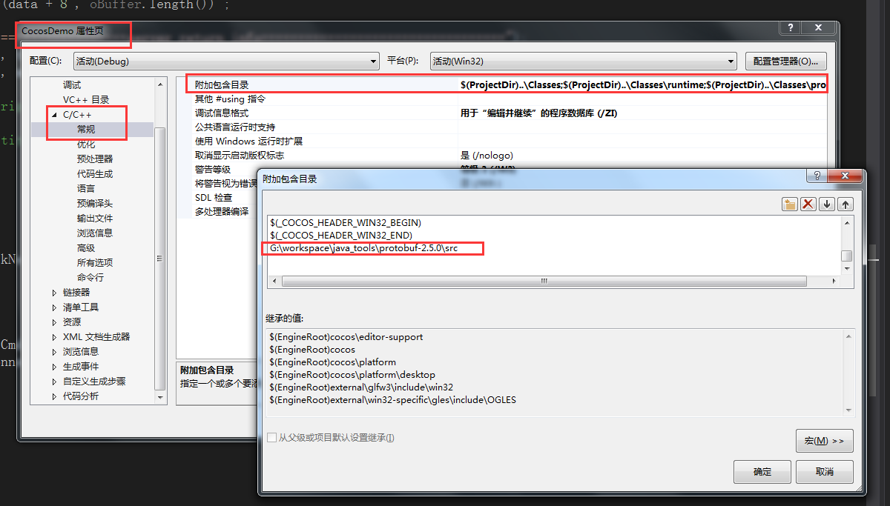
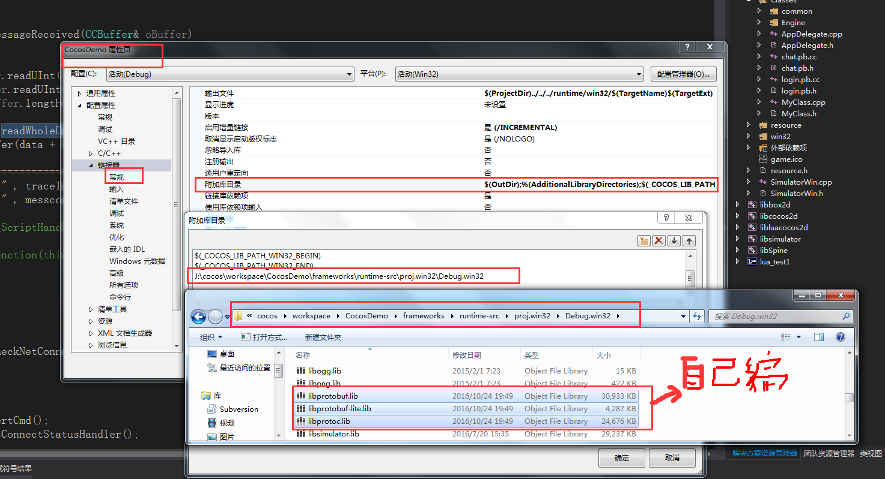
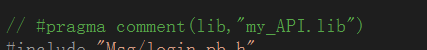
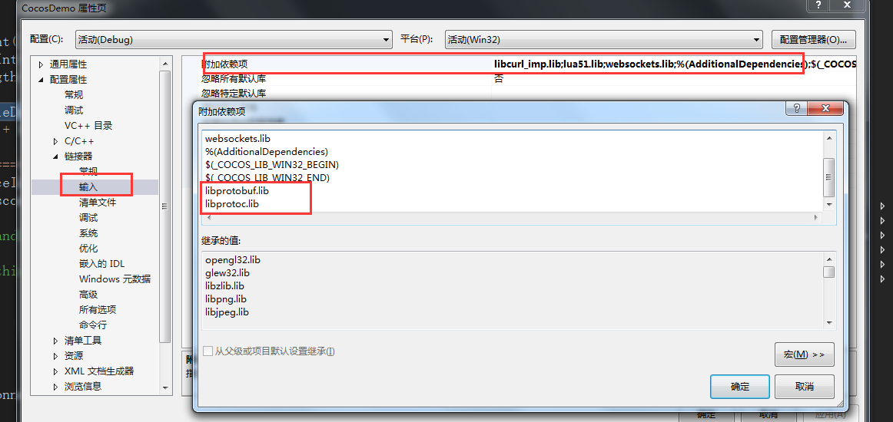

一：需要头文件引用1：主要是写代码或编译时需要用到引用的头文件，来具体的调用到指定的类。
操作如下：
对protobuf的头文件引用

二：添加链接器
1：头文件调用方法时，具体的实现引用
对protobuf生成的lib操作如下：
其中用的的 libprotobuf.lib与libprotobuf-lite.lib、libprotoc.lib这几个都是vs用protobuf源码本机编译出来的。不然可能出现版本不匹配的现象。

2：对lib的引用。这下面的输入，可以使用代码替代。如：
直接在类前面引用lib即可。
